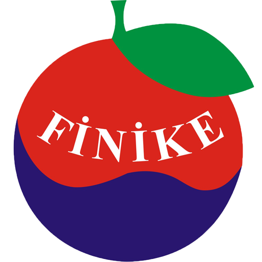

Finike
Weather
Social Media


Bookmark Bar
Finike
About Finike
 Finike, the ancient Phoenicus, is a district on the Mediterranean coast of Antalya Province in Turkey, to the west of the city of Antalya, along the Turkish Riviera. It is located on the southern shore of the Teke peninsula, and the coast here is a popular tourist destination. However, Finike is best known for its oranges, the symbol of the town.
The local economy depends on agriculture, particularly oranges and other citrus fruits. This is supplemented by income from tourism in the summertime, although because of the lucrative orange production and the distance from Antalya Finike has not seen the large-scale tourism boom that has so radically changed the other coastal districts of Antalya. Finike is a quiet district where people buzz around on mopeds going about their daily lives. Indeed many of the visitors that Finike does attract are retired people in search of relaxation. That's mostly because of the construction policy of 1980. That policy made the land more suitable for investment in agriculture rather than in hotels, luxury apartments and other tourist attractions.
A type of pale limestone is quarried at Limyra, and sold as a decorative building material. It's cream colored with a homogeneous structure. Moreover it's extremely light and that makes it a perfect for building walking alleys and streets where only light vehicles are passing. The geologist classify the Limura limestone as with medium density.
The port of Finike is now a yacht marina, and has a small fishing fleet. The coast is rich in marine life, including sea turtles, and fish, including local specialities red porgy Sparidae and grouper; other fish found along the coast include leerfish (Carangidae) and the more widespread Mediterranean varieties such as bluefish, sea bream, sea bass, with swordfish, sardines and others found further out to sea. However, the coast suffers from overfishing, and many varieties, including the porgy, are in decline.
The beaches of Finike are an important nesting ground for Caretta caretta sea turtles, and the rocky parts of the coast are used by the rare Mediterranean Monk Seal.
Places of interest
- The ruins of Limyra are to be seen three miles east of the Finike, they consist of a theatre, tombs, Sarcophagi, bas-reliefs, Greek and Lycian inscriptions, etc.
- The ancient city of Arycanda, in a narrow valley off the road to Elmali.
- The ruins of Trysa with a carved frieze depicting Theseus, on the road to Kas.
- The small village of Turuncova, hidden in a small valley of Taurus Mountains, has preserved its traditional lifestyle and culture.
- The cave of Suluin.
- Wreck of a Phoenician merchant ship from about 1200 BC in Cape Gelidonya
This site preparing for given more information about Finike City in English.